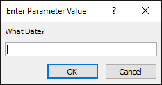
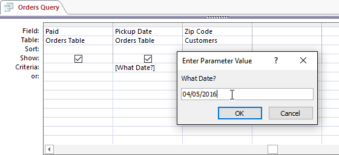
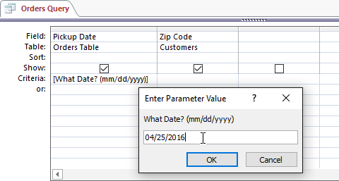
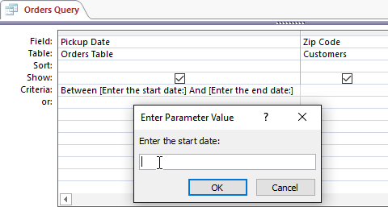

O interogare cu parametri este una dintre cele mai simple și mai utile interogări pe care le puteți crea. Deoarece interogările parametrilor sunt atât de simple, pot fi actualizate cu ușurință pentru a reflecta un nou termen de căutare. Când deschideți o interogare cu parametri, Access vă va solicita un termen de căutare și vă va afișa rezultate ale interogării care reflectă căutarea dvs.
Când executați interogări cu parametri, termenii de căutare acționează ca criterii variabile, care sunt criterii de interogare care se modifică de fiecare dată când executați interogarea. De exemplu, să presupunem că deținem o brutărie și dorim să creăm o interogare care să caute rapid comenzile care au fost plasate la o anumită dată. Am putea crea o interogare de parametri cu criterii variabile în câmpul Data. În acest fel, de fiecare dată când rulăm interogarea va apărea o casetă de dialog care ne va cere să introducem data pe care dorim să o caute interogarea noastră.

Vom introduce data pe care o dorim, apoi Access va rula interogarea folosind data pe care am introdus-o ca termen de căutare.
Pentru a crea și a rula o interogare cu parametri:

De exemplu, într-o interogare normală am putea găsi comenzi care au fost plasate între două date utilizând criteriile Between x AND y și înlocuind x și y cu prima și respectiv a doua dată. Pentru a transforma acest lucru într-un criteriu parametru, am înlocui pur și simplu x și y cu textul pe care vrem să apară în prompt. Criteriile noastre variabile ar putea arăta astfel: Între [Introduceți data de început:] și [Introduceți data de încheiere:] . Aceste două solicitări vor apărea când executați interogarea.
